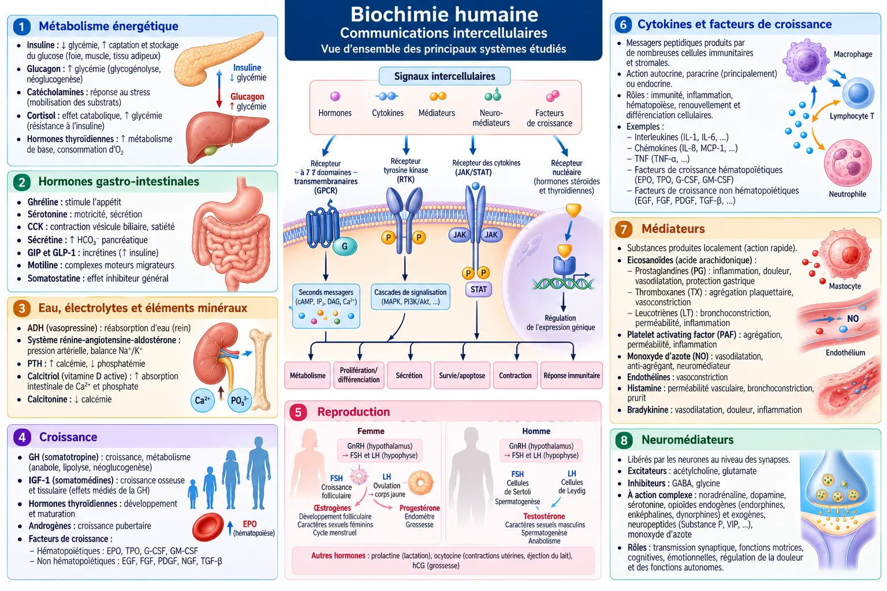
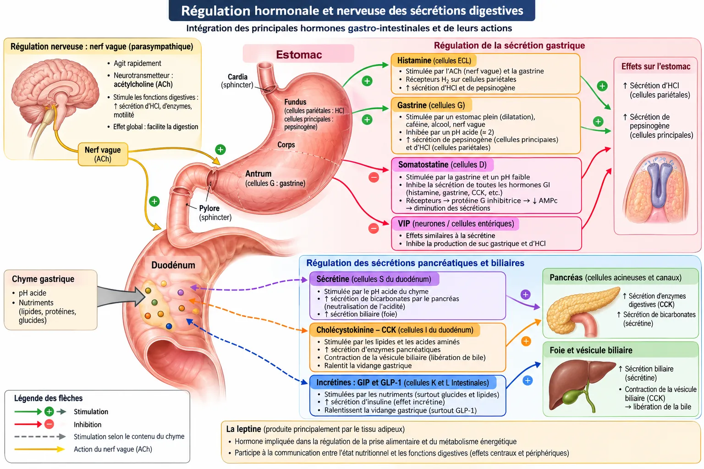
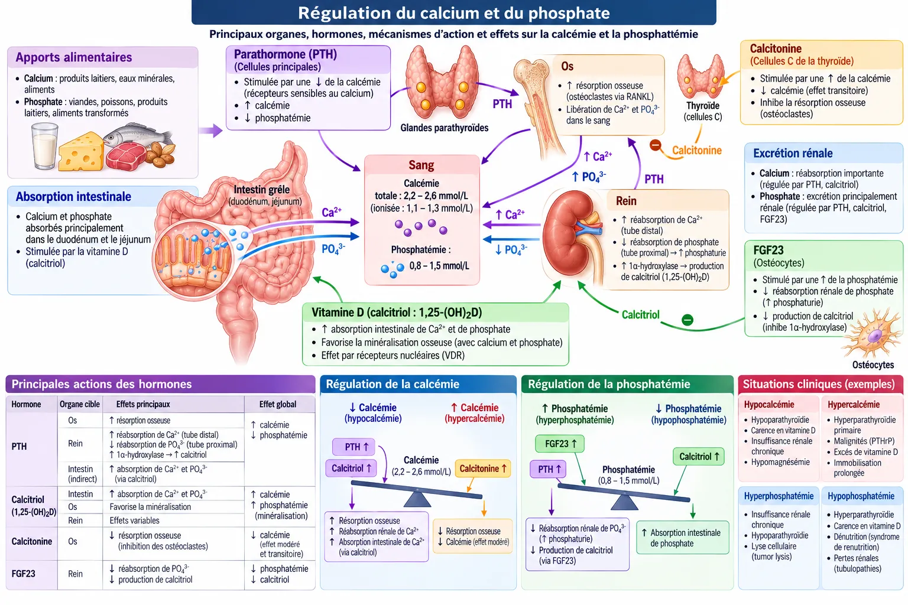
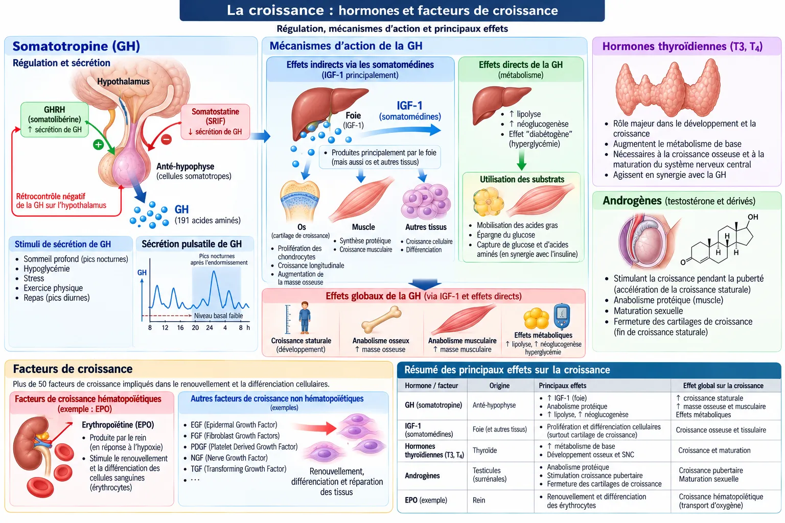
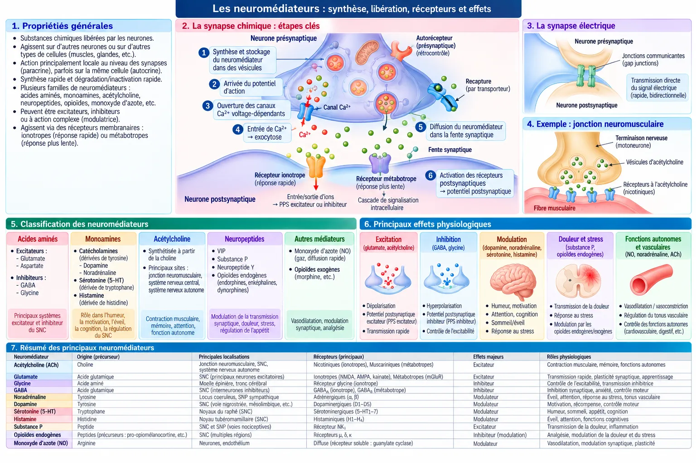
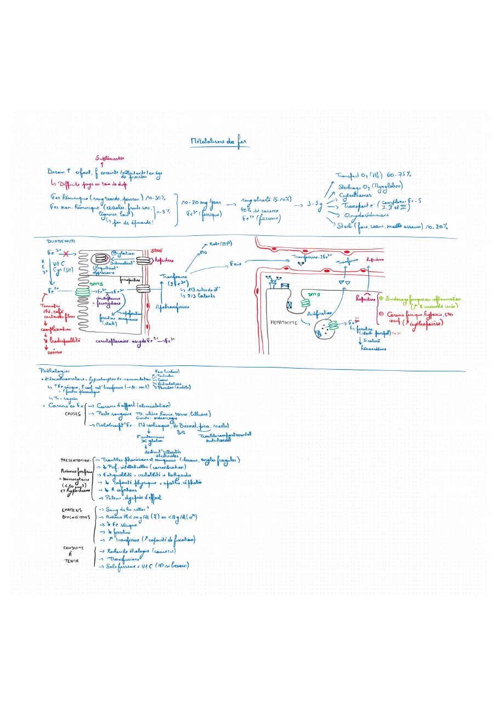
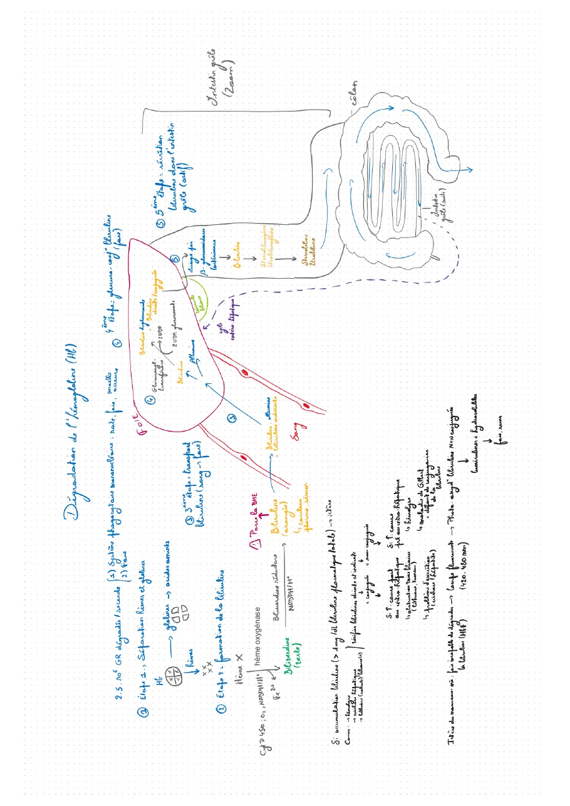

Biochimie humaine
L'examen écrit — 8 janvier 2027
Même format en 1re et 2e session. Les profs dessinent au tableau : « ce que je dessine au tableau, c'est votre synthèse ». Le chapitre 3 (alimentation) est à lire mais pas examiné.
1. Développement
On commence par les questions de RS. « Sur base d'un schéma, expliquez-moi » : du texte sans schéma = zéro. Votre propre schéma est accepté s'il est plus clair.
2. Questions courtes
Quelques questions ouvertes à réponse courte (QROC), dont « que savez-vous de… ».
3. Question clinique
Chaque prof pose ses questions ; on termine souvent par une question très clinique (cas de patient).
4. QCM
Environ 18 points, sans pièges. Répartition : 60 % théorie, 40 % QCM.
Molécules
Les reconnaître et les dessiner. Depuis deux ans : une molécule dessinée avec « que savez-vous ? ».
Séminaires
Diabète, maladies hémorragiques, maladies thrombotiques, dyslipidémies : mêmes types de questions que le cours.
Outils de révision
Chapitre 1
Chapitre 2 · Les messagers
Chapitre 4 · Le sang
Chapitre 5 · Le foie
Séminaires
Les schémas de synthèse (WebCampus)
Touchez un schéma pour l'agrandir.










